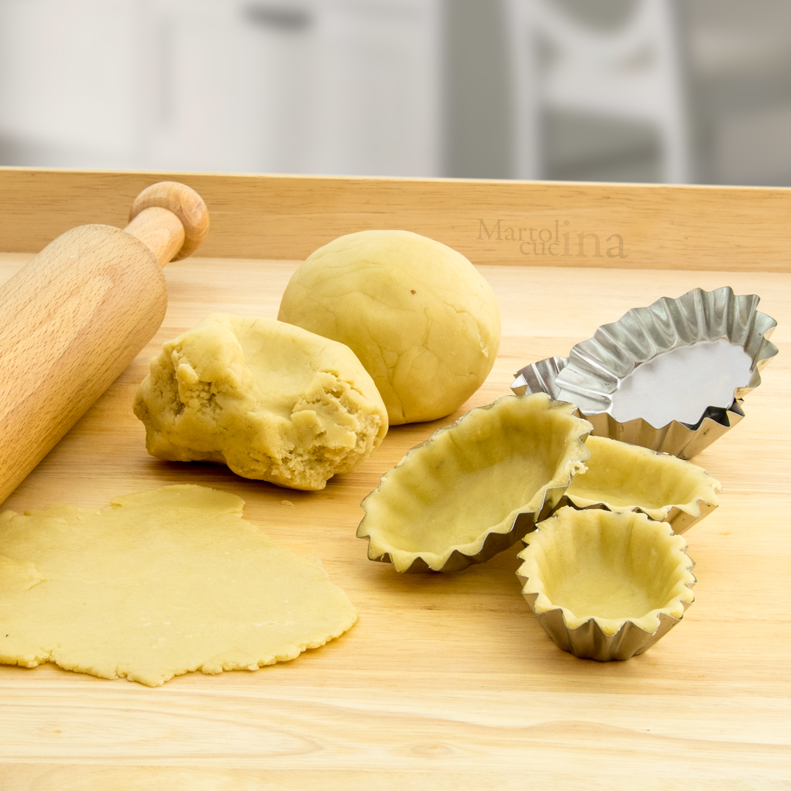

Pasta frolla
Ingredienti
- 1 Kg di farina
- 200 g di burro
- 350 g di zucchero
- 5 uova
- 1 bustina di lievito
Preparazione
1. Preparazione dell'Impasto:
- In una ciotola o su una spianatoia, lavora rapidamente la farina con il burro freddo fino a ottenere un composto sabbioso.
- Aggiungi lo zucchero, le uova e un pizzico di lievito per dolci. Impasta fino a ottenere un impasto liscio e omogeneo.
2. Riposo:
- Avvolgi la frolla nella pellicola trasparente e lasciala riposare in frigorifero per almeno 30 minuti.
3. Cottura:
- Stendi la pasta frolla a uno spessore di circa 1 cm e disponila in una teglia o forma biscotti.
- Cuoci in forno preriscaldato a 180°C per circa 20 minuti, fino a che non risulta dorata.